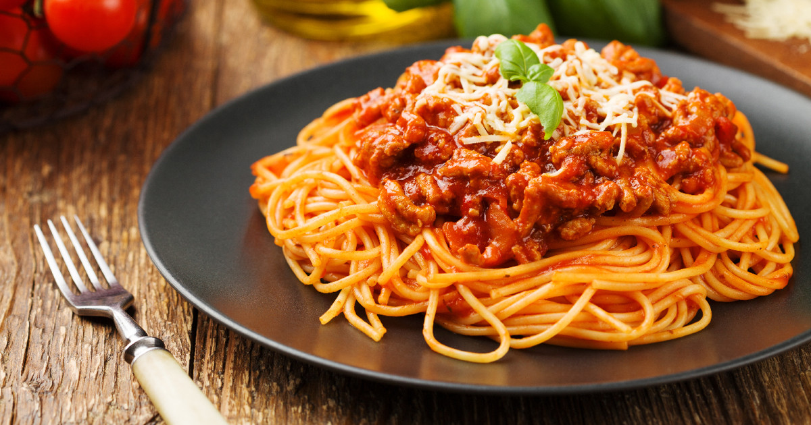

Spaghetti Bolognese

Recipe Description
Our best ever spaghetti bolognese is super easy and a true Italian classic with a meaty, chilli sauce. This pasta bolognese recipe is sure to become a family favourite. It doesn’t take a lot of ingredients (or a lot of money) to make a classic Bolognese recipe. What it does take, though, is patience for the sauce to achieve the ideal authentic texture. You’re going to go low and slow—it’ll take around 3 hours, but most of that cook time is hands-off.
Ingredients
- medium onion, chopped
- 1 lb. ground beef chuck (20% fat), patted dry
- ⅓ cup tomato paste
- 1 lb. fresh tagliatelle or pappardelle, or dry rigatoni
- 2 oz. finely grated Parmesan (about ½ cup), plus more for serving
Steps
- Pulse onion, celery, and carrot in a food processor until very finely chopped. Transfer to a small bowl.
- Heat oil in a Dutch oven or other large pot over medium. Break beef into small clumps (about 1½") and add to pot; season lightly with salt. Cook, stirring occasionally but not breaking meat apart, until beef is lightly browned but not crisp, 6–8 minutes.
- Wipe out pot. Cook pancetta in pot over medium heat, stirring occasionally, until pancetta has released some of its fat and is crisp, 6–8 minutes.
- Return beef to pot and pour in wine. Reduce heat to medium-low and cook, smashing down on beef with a wooden spoon, until wine is evaporated, surface of pot is almost dry, and meat is finely ground, 12–15 minutes.
Return to main page